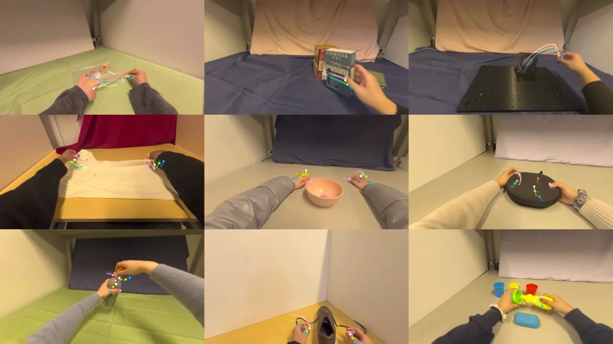
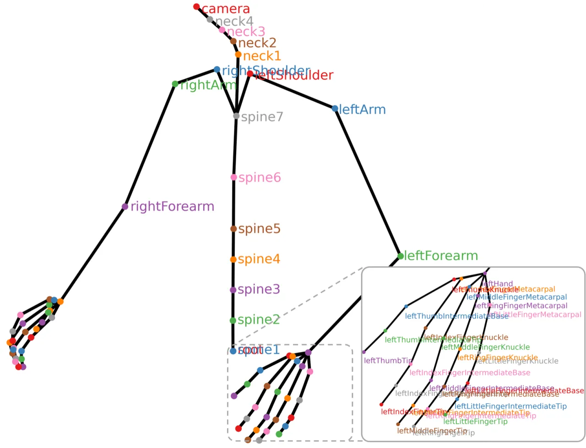
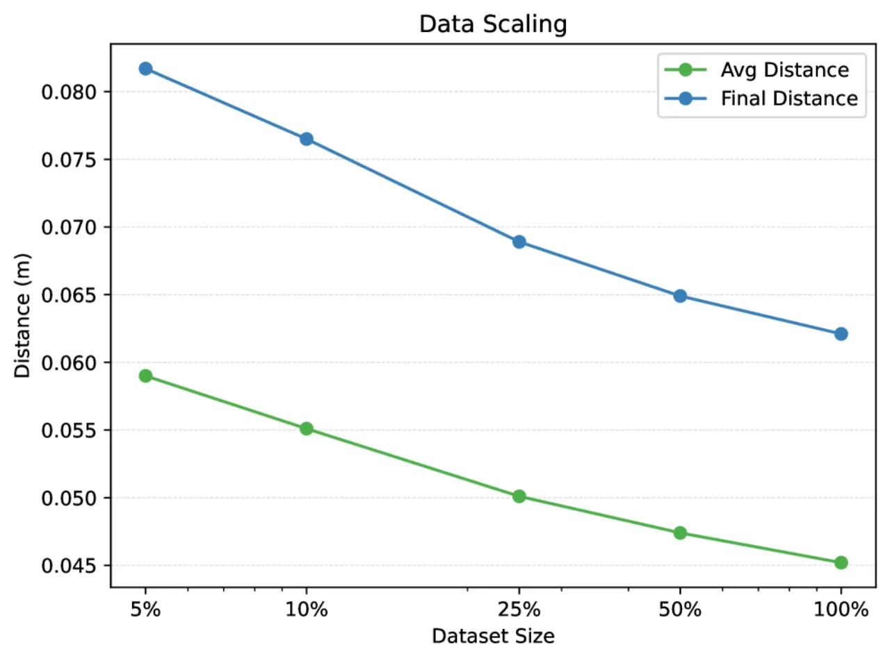
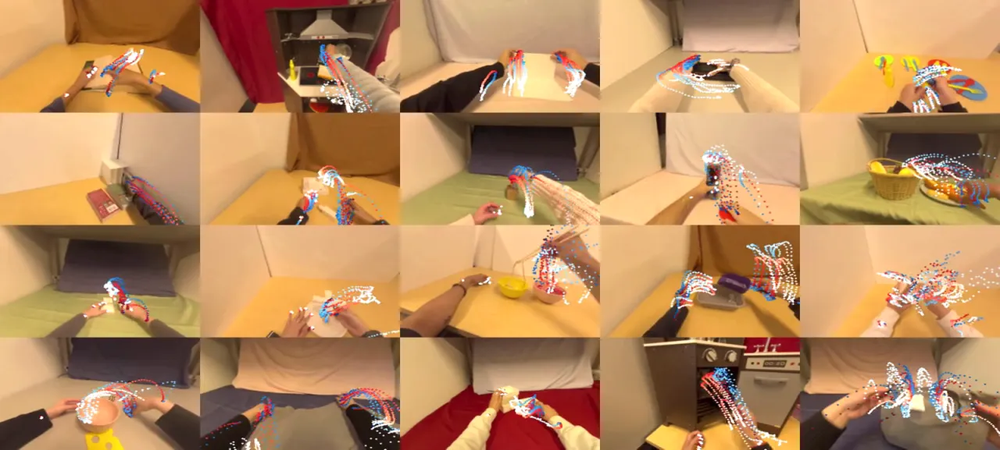

EgoDex 是一个使用 Apple Vision Pro 采集的大规模第一视角灵巧操作数据集，包含 829 小时、1080p、30Hz 的视频，338,000 个任务演示，以及 194 种桌面操作任务的完整 3D 手部和手指追踪数据。基于此数据集，作者提出了两个新的 benchmark——手部轨迹预测与逆动力学预测——并训练了多种模仿学习策略，系统评估了数据规模与模型架构的影响。
机器人灵巧操作长期受限于高质量演示数据的匮乏。现有数据集要么规模小、任务单一，要么缺乏精细的手指级追踪信息，难以支持泛化能力强的策略学习。人类每天进行大量灵巧的手部操作，如何高效捕捉这些数据并用于机器人学习，是该领域的核心挑战。
"EgoDex contains 829 hours of egocentric video with paired 3D hand and finger tracking data, covering 194 tabletop manipulation tasks with household objects."

EgoDex 在规模和标注质量上均大幅超越现有的机器人操作与人类手部交互数据集：
| 数据集 | 演示数量 | 任务数 | 帧数 | 灵巧手标注 |
|---|---|---|---|---|
| DROID | 76k | 86 | 19M | 否 |
| Ego4D (HOI) | 89k | n/a | 21M | 否 |
| EgoDex | 338k | 194 | 90M | 是 |
在动词多样性上，"most verbs in EgoDex are above the 10³ mark"，而 DROID 中"many verbs are below the 10¹ mark"。
EgoDex 的核心贡献分为两部分：一是大规模数据采集流程，二是基于数据集建立的两个 benchmark 及相应的模仿学习基线模型。采集使用 Apple Vision Pro 配合 visionOS 2 ARKit，无需额外硬件，直接采集裸手演示。

给定图像观测、骨骼姿态和自然语言描述，预测手部轨迹。评价指标为预测轨迹与真实轨迹之间的平均距离（Avg Distance）和终点距离（Final Distance），支持 K 次采样的最优值（K=1, 10）。
给定起始帧和目标帧的图像观测，预测两帧之间的手部运动。相当于视觉目标条件化策略（visually goal-conditioned policy），无需语言描述。
实验评估了两类架构与三种预测头的组合：
视觉编码器使用预训练 ResNet（冻结），输入分辨率 224×224。训练配置：50,000 步，batch size 2,048（8 块 A100 各 256），学习率 1e-4（Adam），每个模型约训练 72 小时。
在两个 benchmark 上系统评估了架构选择、预测时域、视觉目标条件化以及数据规模的影响。指标为手腕和指尖位置的平均距离（Avg Distance）和终点距离（Final Distance），单位为米，越低越好。
| 模型 | Avg Distance K=1 | Avg Distance K=10 | Final Distance K=1 | Final Distance K=10 |
|---|---|---|---|---|
| Dec + BC | 0.045m | 0.045m | 0.062m | 0.062m |
| Dec + DDPM | 0.053m | 0.041m | 0.071m | 0.044m |
| Dec + FM | 0.052m | 0.040m | 0.071m | 0.043m |
| EncDec + BC | 0.044m | 0.044m | 0.060m | 0.060m |
| EncDec + DDPM | 0.052m | 0.039m | 0.071m | 0.043m |
| EncDec + FM | 0.051m | 0.038m | 0.070m | 0.041m |
| 预测时域 | Avg Distance | Final Distance |
|---|---|---|
| H=30 (1 秒) | 0.031m | 0.049m |
| H=60 (2 秒) | 0.045m | 0.062m |
| H=90 (3 秒) | 0.053m | 0.069m |
加入目标图像后，平均距离从 0.045m 降至 0.035m（降低 22%），终点距离从 0.062m 降至 0.029m（降低 53%），目标图像对性能提升效果显著。

500M 参数模型与 200M 参数基线性能相同（Avg Distance 均为 0.045m，Final Distance 均为 0.062m），说明在当前数据规模下中等大小模型已足够。

在 6 个 OOD 任务上，模型表现出一定的泛化能力，但不同任务差异较大：
| OOD 任务 | Avg Distance |
|---|---|
| Jigsaw Puzzle | 0.047m |
| Knit Scarf | 0.064m |
| Blowdry Hair | 0.083m |
| Stamp Paper | 0.099m |
生成式预测头（DDPM、FM）在多次采样（K=10）时优于确定性 BC，表明在多模态操作轨迹的建模上，概率模型更有优势。视觉目标图像对 inverse dynamics 任务的提升最为显著。
论文原文指出："EgoDex has significant diversity across tasks and manipulation behaviors, it is limited in background and scene diversity."数据采集在有限的室内场景中进行，背景视觉多样性受限，可能影响策略在真实多样环境中的泛化能力。作者提出未来将通过程序化背景随机化和在更多样化环境中采集数据来解决此问题。
论文指出："dexterous annotations can also be imperfect, especially during heavy occlusion or very high speed motions, as they are themselves model predictions."手部姿态标注本身是模型预测结果（非光学标记捕获），在重度遮挡或快速运动场景下可能存在误差，进而影响策略学习质量。
论文主要评估手部轨迹预测 benchmark，尚未直接展示在真实机器人上的端到端操作验证。人-机器人的形态差异（embodiment gap）、视角差异等问题仍需后续工作解决。
实验显示 500M 参数模型与 200M 参数基线性能相同，表明当前数据规模下更大模型无法带来收益。但这也意味着随着数据规模进一步增大，更大模型或许才能释放潜力，数据-模型协同扩展的最优策略仍需探索。